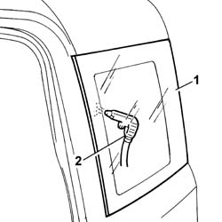

7035C04 side quater light one lh or rh eliminate leaks
- Path
- Procedures > 70 FITTINGS > 7035 BODYSHELL WINDOWS > 7035C passenger compartment side fixed windows > 7035C04 side quater light one lh or rh eliminate leaks
- Kind
- repair procedure (removal / refitting; the operation number is the code)
- Applies to
- all engines; all production periods
- Interactive page
- https://sloeber94.github.io/elrnDB-fPnd/en/#/2753174
Applies to: all engines; all production periods
1. Wet with soapy water the external area where the leak occurs.
2. Blow compressed air from inside and identify the point of the leak.

Applies to: all engines; all production periods
If the leak is small, seal the relevant part from the inside and wait for the sealant to dry. Then repeat the test.
If the penetration point is too large, remove and refit the side window as described in the procedure:
7035C54 side window one lh or rh r r includes cleaning of housing